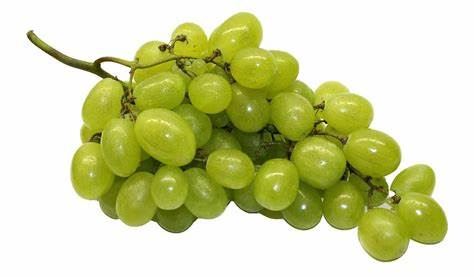
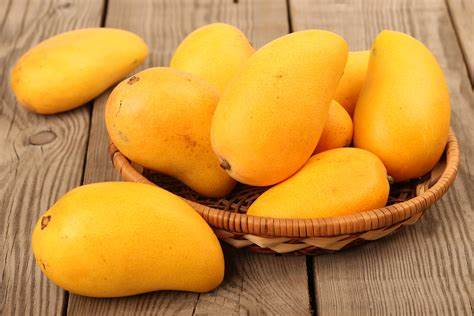
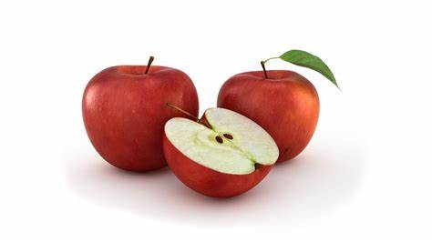

新鲜水果 |
|
葡萄葡萄（学名：Vitis vinifera L.）为葡萄科葡萄属木质藤本植物，小枝圆柱形，有纵棱纹，无毛或被稀疏柔毛，叶卵圆形，圆锥花序密集或疏散，基部分枝发达，果实球形或椭圆形，花期4-5月，果期8-9月。 葡萄是世界最古老的果树树种之一，葡萄的植物化石发现于第三纪地层中，说明当时已遍布于欧、亚及格陵兰。 [1] 葡萄原产亚洲西部，世界各地均有栽培， [2] 世界各地的葡萄约95%集中分布在北半球。 [3] 葡萄为著名水果，生食或制葡萄干，并酿酒，酿酒后的酒脚可提酒石酸，根和藤药用能止呕、安胎。 [2] 芒果核果大，肾形（栽培品种其形状和大小变化极大），压扁，长5-10厘米，宽3-4.5厘米，成熟时黄色，中果皮肉质，肥厚，鲜黄色，味甜，果核坚硬。 [2] 苹果苹果是蔷薇科苹果亚科苹果属植物，其树为落叶乔木。苹果营养价值很高，富含矿物质和维生素，含钙量丰富，有助于代谢掉体内多余盐分，苹果酸可代谢热量，防止下半身肥胖。 苹果是一种低热量的食物，每100克产生大约60千卡左右的热量。苹果中营养成分可溶性大，容易被人体吸收，故有“活水”之称。它有利于溶解硫元素，使皮肤润滑柔嫩。 |
|
| 版权所有 © Dengxiaohui | |